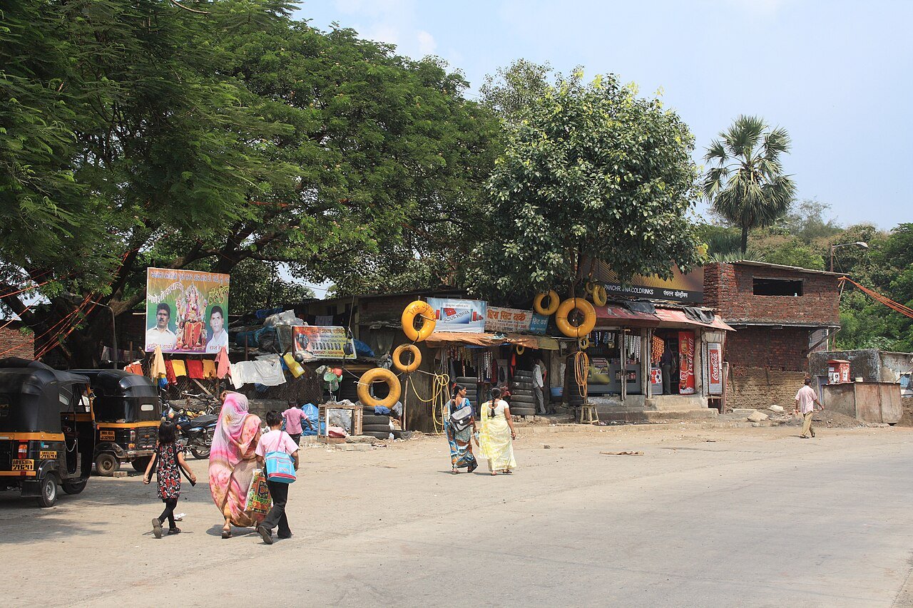
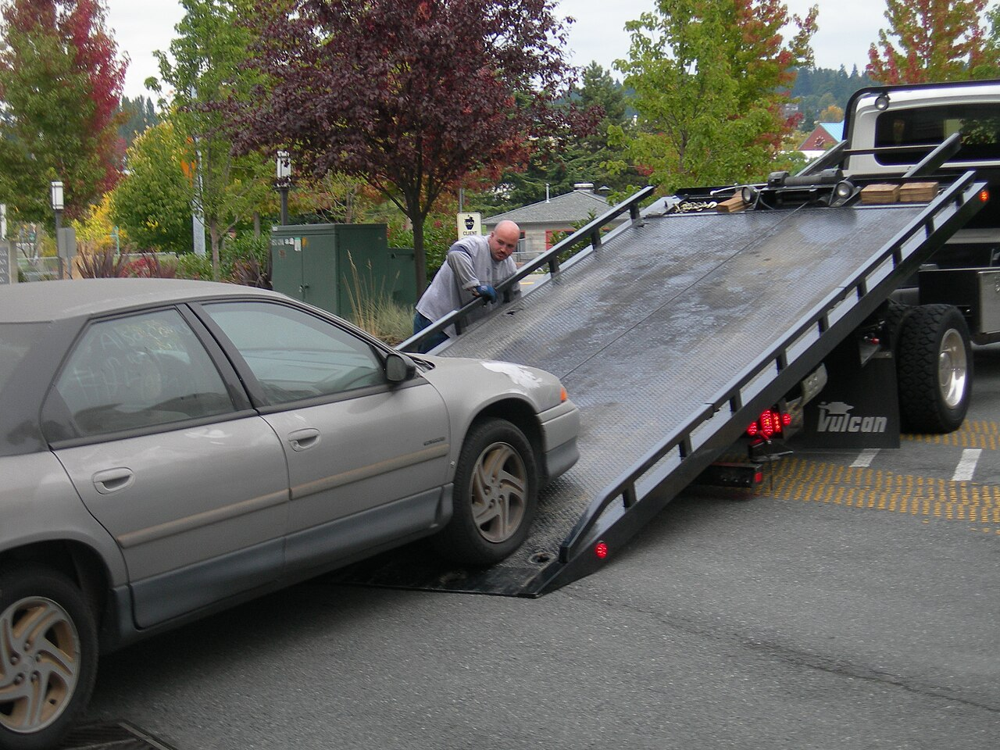

Roadside assistance
For issues such as a flat tire, a no-start, a lockout, or running out of fuel. Describe the vehicle and its exact location, then confirm what can safely be handled on-site.
Towing, roadside, and recovery
Compare common roadside, towing, recovery, and fleet support options. The right service depends on your vehicle, location, access, and what happened.
Help for different situations
Some problems may be handled where the vehicle is parked; others need suitable recovery equipment and a planned destination. Always prioritize personal safety and follow local emergency guidance.

For issues such as a flat tire, a no-start, a lockout, or running out of fuel. Describe the vehicle and its exact location, then confirm what can safely be handled on-site.

For vehicles that cannot continue safely, are stuck, or need planned transport. Share the vehicle condition, access limits, and preferred destination so a provider can assess suitable equipment.
Service options
Each guide explains when an option may help, what details to share, and what to confirm before authorizing work.
Make the request clearer
Clear information helps a local provider assess access, equipment, and the next safe step. Share only what is needed to arrange the service.
Note the road name, direction of travel, nearby exit or landmark, and a safe place to meet. Mention narrow access, parking structures, or roadside hazards.
Share the make, model, approximate size, what happened, whether it can move, and any visible damage. For larger vehicles, include load or height limits when known.
Confirm provider availability, expected arrival range, proposed work, destination, passenger arrangements, and the full estimate—including any additional charges—before authorizing service.
If you or someone else is injured or in immediate danger, contact local emergency services first and follow their instructions.
Service FAQs
It depends on the problem, vehicle condition, location, and whether it is safe to work where the vehicle is stopped. Describe the situation to a provider and confirm whether an on-site visit is suitable or towing is needed.
Tell the provider your preferred destination before service begins. Confirm that the destination is within the agreed plan and ask how distance or after-hours access may affect the estimate.
Passenger policies and available seating vary by provider and situation. Ask before the truck arrives and make a separate safe travel plan if passengers cannot ride along.
Confirm what work is included, the estimated arrival range, the destination, the total price and possible extra charges, and what happens if the proposed service cannot resolve the issue.
An arrival estimate can change with traffic, weather, distance, and other active calls. Ask how updates are provided and contact the provider if your location or situation changes.
Share the vehicle type, approximate size and weight if known, whether it can roll or steer, and any low-clearance access, special drivetrain, load, or damage concerns. This helps the provider assess appropriate equipment.
Follow local emergency guidance and move to a safer place away from traffic if you can do so safely. Use hazard lights when appropriate, and tell the provider if conditions at the scene change.